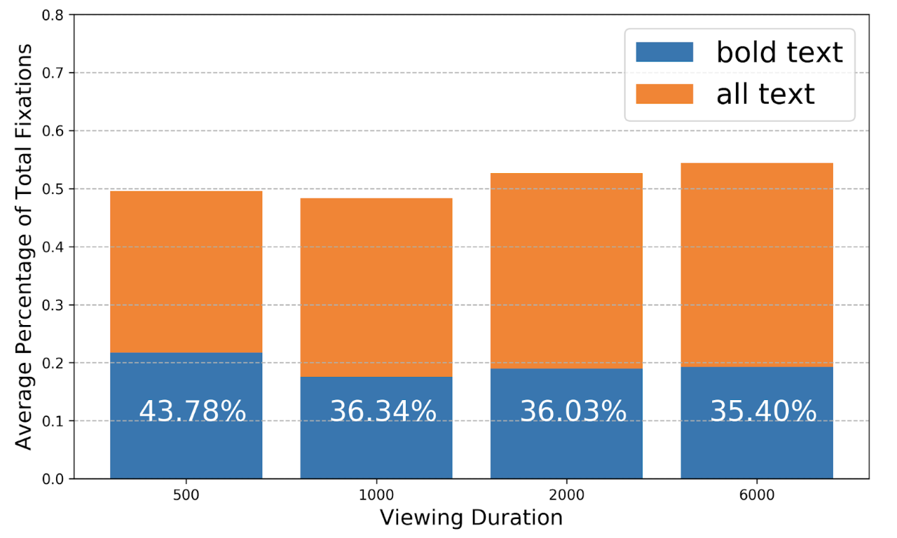

Attention Methodologies
Website
In this work, we compare and analyze four UIs for collecting crowdsourced attention maps. We introduce ZoomMaps, which allows collecting attention data at multiple image scales using the familiar zoom gesture on a mobile phone. We conduct the first in-depth analysis of CodeCharts, an interface for approximating eye locations at precise viewing durations. These novel interfaces are compared to ImportAnnots, a tool for collecting annotations of graphic design importance, and the moving-window interface BubbleView. We lay out in detail the methodology used for each of these interfaces and discuss which types of images and potential applications are appropriate for each. Additionally, we collect CodeCharts, ZoomMaps, and ImportAnnots data on five types of image stimuli - natural images, resumes, graphic designs, infographics, and academic posters - and analyze the results to characterize in detail what can be learned from each method of data collection.
Our Focus
Resume Analysis. To analyze resumes, we use three different methodologies: 1. CodeCharts, which shows images to users and ask them to enter the code on an image, by replacing the image with a map of codes, to indicate where they are looking at given the presentation time. This methodology approximates where the user is looking at given the presentation time; 2. ZoomMaps, where users have the view the images on a mobile phone and zoom in to enlarge parts of the image. This methodology captures where they have zoomed in; 3. ImportAnnots, in which users annotate with free-form shapes regions where they consider as important.
For this case study, we obtained gaze points on 116 resumes using CodeCharts with presentation time of 0.5, 1, 2 and 6 seconds. Zoommaps attention maps have been obtained on 29 resumes to check what attracts further attetion. ImportAnnots attention maps have been collected on 26 resumes to find out what users consciously regard as important.
We find that on 25 out of the 29 resumes analyzed with ZoomMaps, reviewers zoomed in on graphical elements such as bar charts and which are often used to represent the skill section. From CodeCharts, we discover that from shorter to longer viewing durations people's gaze moves increasingly towards textual elements, but that gaze moves away from bolded towards non-bolded text as shown below.

This suggests that in the first few seconds of viewing reviewers focus on easily-visible elements like titles, section headings, and pictograms. Thus, visualizing resume data may actually be a successful technique for drawing a reviewer's attention to your skills.
Interestingly, people's gaze continues to be attracted by faces even if those faces are iconographic. Out of 12 resumes that contained a face, all 12 had fixations on the face within two seconds of presentation time. This could indicate that personal portraits on a resume may distract a reviewer from other content.